1. Carga Tributária Atual x IBS/CBS (26%)
Comparação consolidada de ICMS + PIS + COFINS versus IBS/CBS com alíquota combinada de 26% (sobre VL_ITEM · saídas).
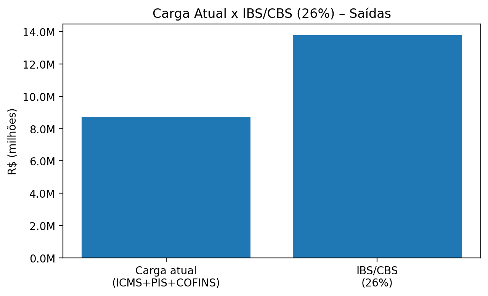
Leitura executiva
A LITEON apresenta alíquota efetiva média atual de 16.4% nas saídas (IND_OPER=1), abaixo do cenário de referência do IBS/CBS (26%). Isso sugere aumento do débito no recorte bruto das saídas, e torna créditos das entradas (compras) e capacidade de repasse comercial fatores decisivos para o impacto econômico final.
Próximos passos recomendados: simulação líquida (entradas x saídas), revisão de políticas de preço por UF e por CFOP, e plano de governança de cadastros (NCM/CFOP/CST).
2. Top CFOP por Receita (saídas) – Carga Atual x IBS/CBS (26%)
Foco nas naturezas de operação com maior materialidade, destacando onde a reforma “bate” mais.
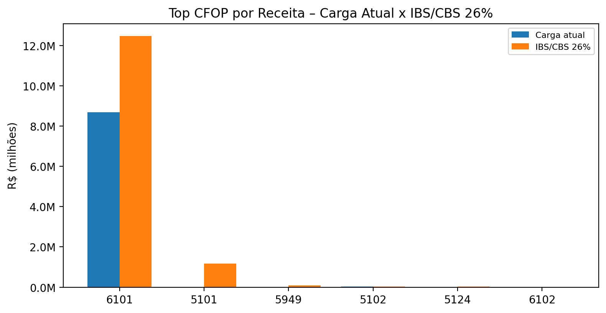
Prioridades
Use os CFOPs líderes como escopo mínimo do projeto de reforma: revisar parametrização fiscal, contratos (repasse), cadastro e cadeia de preços.
Tabela de apoio (Top 6):
| CFOP | Receita (saídas) | Carga atual | IBS/CBS 26% | Δ 26% |
|---|---|---|---|---|
| 6101 | R$ 47.927.377,69 | R$ 8.682.397,10 | R$ 12.461.118,20 | R$ 3.778.721,10 |
| 5101 | R$ 4.502.058,97 | R$ 0,00 | R$ 1.170.535,33 | R$ 1.170.535,33 |
| 5949 | R$ 357.529,30 | R$ 1.518,65 | R$ 92.957,62 | R$ 91.438,97 |
| 5102 | R$ 137.709,16 | R$ 37.818,34 | R$ 35.804,38 | R$ -2.013,96 |
| 5124 | R$ 101.404,00 | R$ 0,00 | R$ 26.365,04 | R$ 26.365,04 |
| 6102 | R$ 6.607,87 | R$ 1.404,17 | R$ 1.718,05 | R$ 313,88 |
3. Receita por UF de Destino (Top 10 · saídas)
Base para estratégia na tributação no destino e avaliação de riscos por praça/cliente.
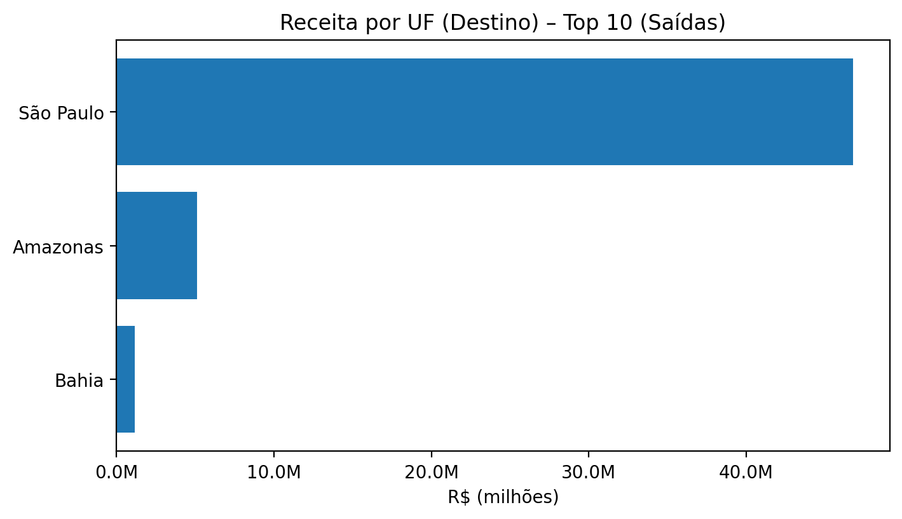
Implicações
Na lógica do IBS, o foco migra para o destino. UFs com maior materialidade devem ser priorizadas em: repasse de preço, condições comerciais e monitoramento de regras complementares.
Top UFs (receita · saídas):
| UF | Receita (saídas) |
|---|---|
| São Paulo | R$ 46.792.219,55 |
| Amazonas | R$ 5.098.701,43 |
| Bahia | R$ 1.141.766,01 |
4. Cenários de IBS/CBS por Alíquota (24% / 26% / 28%)
Sensibilidade da carga em função da alíquota global do IBS/CBS, aplicada sobre VL_ITEM das saídas.
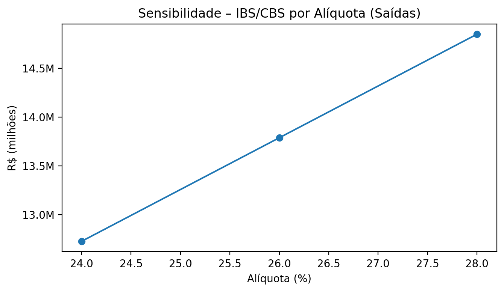
Como usar
A sensibilidade ajuda a negociar internamente faixas de preço e definir gatilhos: cada 1 p.p. de alíquota representa impacto direto sobre a receita de saídas. Trate o cenário 26% como “referência” e mantenha 24% e 28% como bandas.
5. Pareto de CFOP – onde concentrar esforço
Concentração da receita (saídas) por CFOP para priorizar as operações mais materiais.
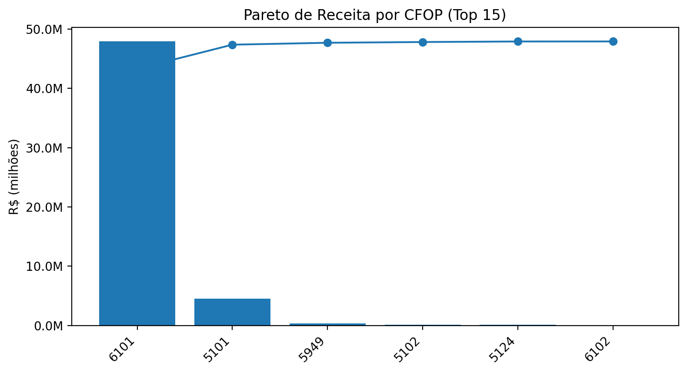
Gestão do escopo
Em geral, poucos CFOPs explicam a maior parte da receita. Use este Pareto para construir um backlog objetivo: primeiro os CFOPs que somam “quase tudo”, depois as exceções.
6. Heatmap CFOP x UF – hotspots de impacto (Δ IBS/CBS 26%)
Matriz de impacto por combinação de CFOP e UF (IBS/CBS 26% menos carga atual), recortada para Top CFOP e Top UF.
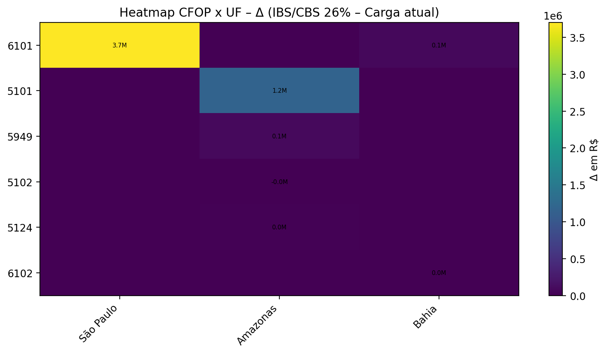
Decisão prática
As células mais intensas indicam onde a reforma tende a alterar mais a carga (por destino e natureza de operação). Use para: precificação por praça, renegociação de condições e correção de parametrizações fiscais.
7. Histograma – alíquota efetiva atual (ICMS+PIS+COFINS)
Distribuição da carga efetiva atual por item: (ICMS + PIS + COFINS) / VL_ITEM, considerando apenas saídas.
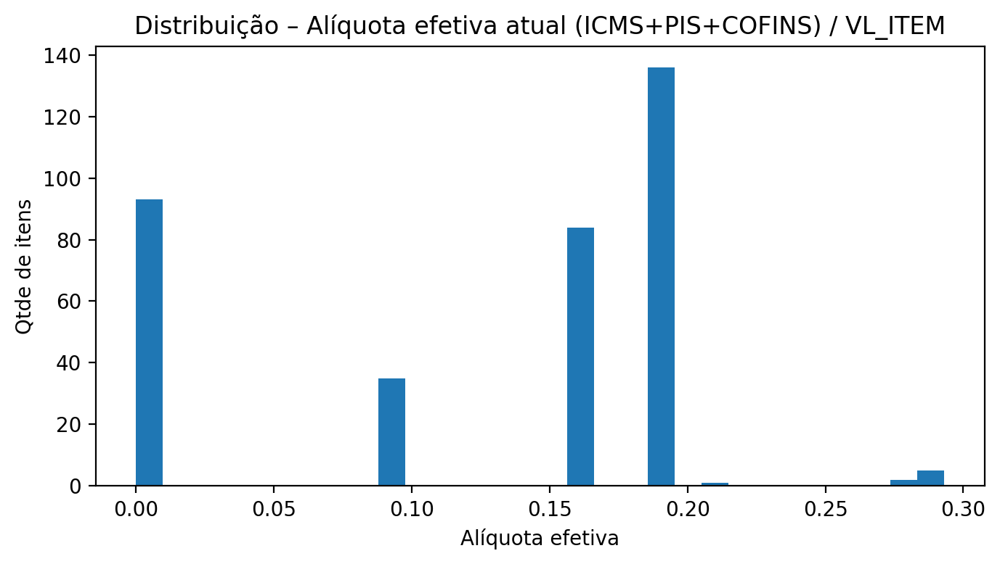
O que o histograma está dizendo
Percentis (itens · saídas): P25 0.0% · Mediana 15.6% · P75 19.3% · P90 19.3% · P95 19.3%.
Uma base com muitos itens em alíquota efetiva baixa tende a sofrer salto ao migrar para alíquota uniforme (ex.: 26%). Isso reforça o papel de créditos das entradas e eventual repasse de preços.
8. Waterfall – de onde vem o Δ (Atual → IBS/CBS 26%)
Decomposição do aumento/redução por CFOP, conectando o número final às causas.
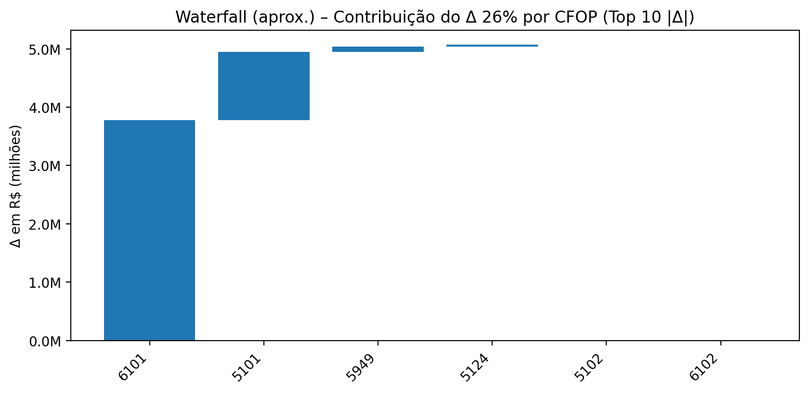
Como usar em reunião
Este gráfico ajuda a explicar por quais CFOPs o impacto é puxado. Trate os 3–5 primeiros CFOPs como “frentes” (cadastro + processo + política comercial).
9. Mapa de risco por NCM – materialidade x Δ%
Prioriza produtos: eixo X materialidade (log) e eixo Y variação percentual sobre a carga atual (26%).
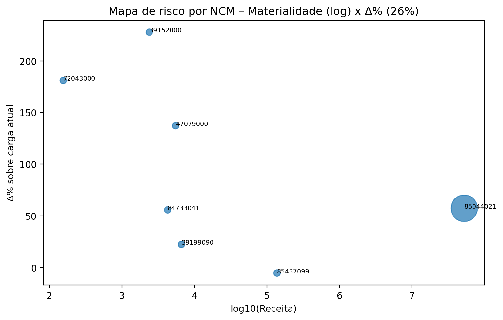
Prioridade por mix
NCMs de alta materialidade e Δ% alto devem entrar primeiro no plano: revisão fiscal, política de preço, margens e estratégia comercial por linha de produto.
Top NCM (receita · saídas + Δ 26%):
| NCM | Receita (saídas) | Δ 26% |
|---|---|---|
| 85044021 | R$ 52.530.840,66 | R$ 4.975.621,47 |
| 80030000 | R$ 345.060,13 | R$ 89.715,63 |
| 85437099 | R$ 137.709,16 | R$ -2.013,96 |
| 39199090 | R$ 6.607,87 | R$ 313,88 |
| 47079000 | R$ 5.511,85 | R$ 828,73 |
| 84733041 | R$ 4.261,61 | R$ 396,74 |
10. B2B x B2C – impacto (proxy por CPF/CNPJ)
Comparativo da carga atual vs IBS/CBS 26% por segmentação simples (CNPJ vs CPF/indefinido), em saídas.
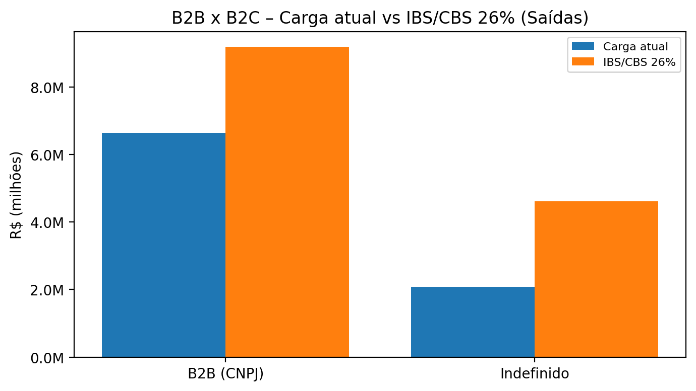
Interpretação
Em B2B, o cliente tende a valorizar neutralidade via crédito. Em B2C, o repasse de preço é mais sensível e exige leitura de elasticidade. Use este recorte para desenhar políticas comerciais diferentes na transição.
11. Qualidade cadastral e consistência fiscal (itens · saídas)
Indicadores de completude e coerência para reduzir risco de parametrização e divergências.
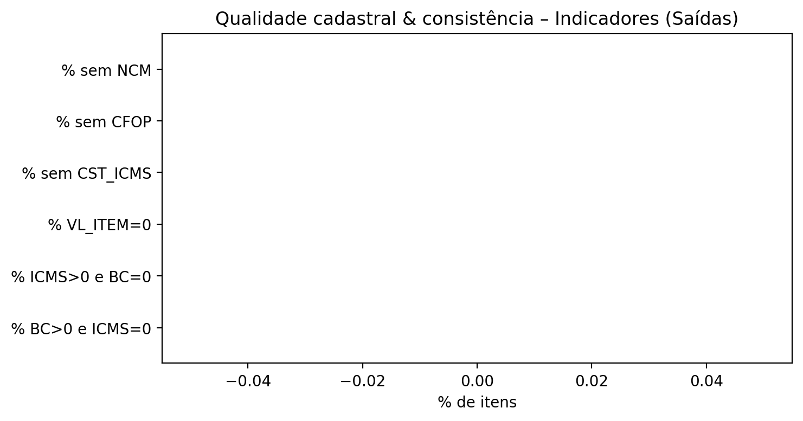
Checklist rápido
- % sem NCM: 0.0%
- % sem CFOP: 0.0%
- % sem CST_ICMS: 0.0%
- % VL_ITEM=0: 0.0%
- % ICMS>0 e BC=0: 0.0%
- % BC>0 e ICMS=0: 0.0%
12. Regime tributário do destinatário (proxy) – risco comercial e de crédito
Distribuição da receita por regime do cliente (quando disponível). Útil para estratégia B2B/B2C e gestão de créditos.
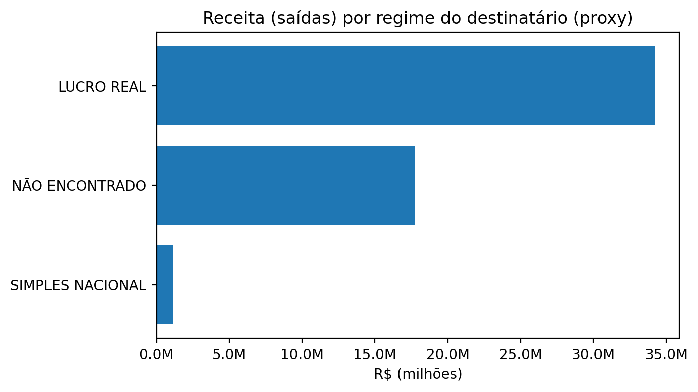
O que olhar
Clientes em Lucro Real tendem a capturar melhor a lógica de crédito (neutralidade). Percentuais elevados em “Não encontrado” sugerem lacuna cadastral (risco de segmentação/precificação).
Tabela de apoio:
| Regime (proxy) | Receita (saídas) | % |
|---|---|---|
| LUCRO REAL | R$ 34.182.744,43 | 64.5% |
| NÃO ENCONTRADO | R$ 17.716.991,10 | 33.4% |
| SIMPLES NACIONAL | R$ 1.132.951,46 | 2.1% |
Checklist de adequação (curto prazo)
Ações “sem arrependimento” para começar já, usando os hotspots identificados.
Trilha recomendada
- Simulação líquida (entradas x saídas): estimar IBS/CBS líquido e risco de acúmulo de créditos por período (capital de giro e ressarcimento).
- Governança de cadastros: validar NCM/CFOP/CST por famílias e operações (priorizando Top CFOP e Top NCM).
- Precificação por praça: criar matriz de repasse por UF e por CFOP (use o heatmap como mapa de decisão).
- Contratos B2B: revisar cláusulas de repasse e alinhamento com clientes-chave, considerando transição e crédito.
- Comitê de reforma: fiscal + comercial + finanças com rotina de cenários e acompanhamento da regulamentação.
Premissas utilizadas
Critérios e simplificações adotados para cálculo e visualizações.
- Base de receita: somatório de VL_ITEM apenas das saídas (IND_OPER=1).
- Carga atual: somatório por item de VL_ICMS.1 + VL_PIS.1 + VL_COFINS.1.
- IBS/CBS simulado: aplicado de forma uniforme sobre a receita de saídas, nos cenários 24%, 26% e 28%.
- Δ (delta): IBS/CBS (cenário) − carga atual.
- Heatmap: recorte para Top 10 CFOP e Top 10 UF por receita de saídas (para legibilidade).
- B2B x B2C (proxy): classificação por tamanho do documento em CPF/CNPJ (14 dígitos = CNPJ, 11 dígitos = CPF; demais = indefinido).
- Regime do destinatário (proxy): conforme coluna REGIME disponível na base cruzada; itens “Não encontrado” sinalizam lacunas cadastrais.
- Limitação: este painel não calcula IBS/CBS líquido (créditos das entradas); trata o impacto bruto nas saídas.